Wrexham AFC · Premier League Squad
First Team
Keeyvon Jenkins Era · the current Wrexham AFC first-team squad
Loading…
The Roster
Grouped by position · sorted by OVR · players on loan appear in Loan Watch belowLoan Watch
Still part of the Wrexham system, out gaining minutes elsewhereSquad Intelligence
Squad Leaders
Full season stats →How Wrexham Lines Up
The Squad page is the full roster. For the tactical picture — starting XI, formation and positional depth — head to the dedicated Depth Chart.
Next Generation
Youth Academy
Prospects development-tracked in the same system as the first team · full Academy page →
Youth Academy
GK · Goalkeepers ▾
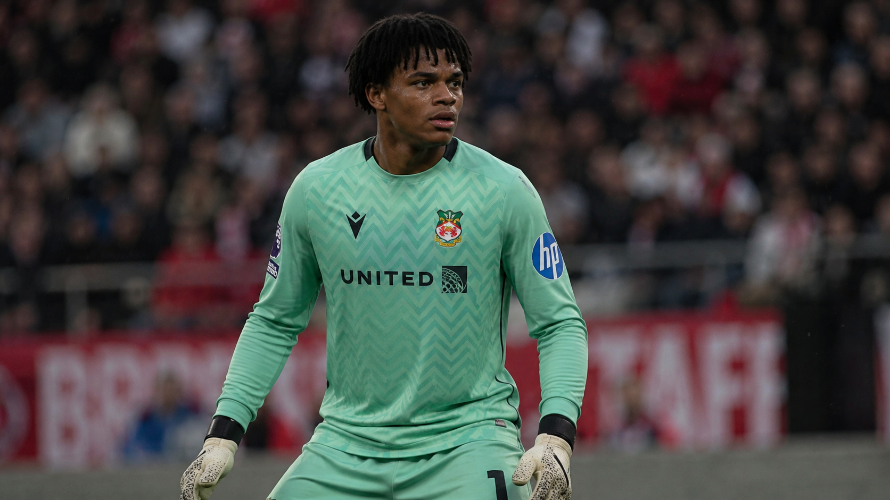
Academy
Mika Horn
GKAge 17 · Germany
Dev Dynamic · GK: Div 56/Han 59/Kic 62/Ref 71/Spd 35/Pos 58
Next OVR 62 · ETA 3w
61
OVR
POT 80–86
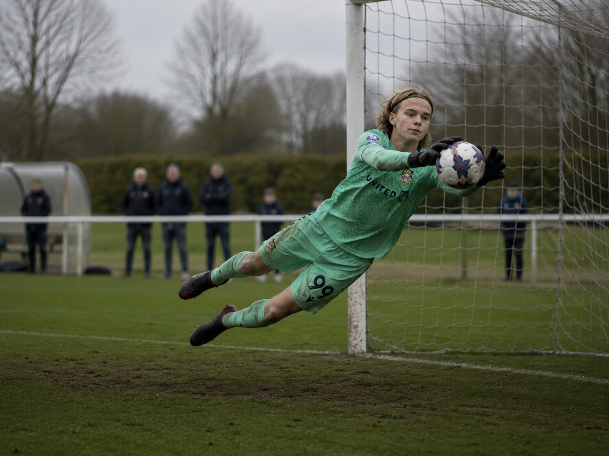
Academy
Martin Bach
GKAge 14 · Germany
Dev Balanced · GK: Div 53/Han 57/Kic 43/Ref 54/Spd 31/Pos 45
Next OVR 52 · ETA 25w
51
OVR
POT 81–87
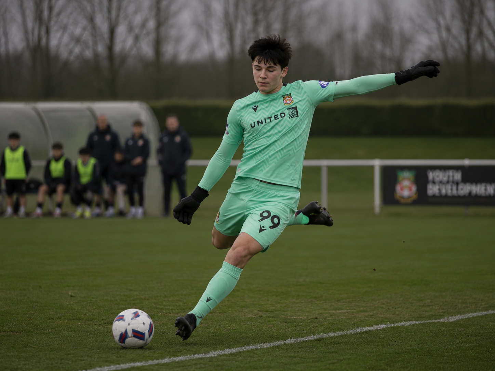
Academy
Albert Bayer
GKAge 15 · Germany
Dev Balanced · GK: Div 37/Han 49/Kic 50/Ref 59/Spd 32/Pos 55
Next OVR 51 · ETA 13w
50
OVR
POT 79–85
DEF · Defenders ▾
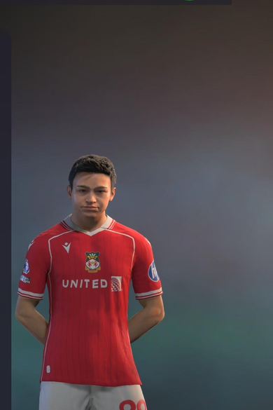
Academy
Victor Cardoso
RBAge 14 · Left · 5'3" / 130 lbs · Brazil
PAC 59
SHO 33
PAS 41
DRI 46
DEF 44
PHY 51
Dev Plan Balanced
Next OVR 50 · ETA 4w
49
OVR
POT 75–89
MID · Midfielders ▾
Academy
Ben Forster
CMAge 16 · Left · 6'2" / 174 lbs
PAC 63
SHO 50
PAS 57
DRI 63
DEF 50
PHY 54
Dev Plan Box-to-Box
Next OVR 63 · ETA 23w
62
OVR
POT 79–85
Academy
Martin Leon
CMAge 16 · Right · 5'8" / 156 lbs · Mar 2026 intake
PAC 61
SHO 49
PAS 53
DRI 56
DEF 44
PHY 48
Dev Plan Playmaker
Next OVR 58 · ETA 17w
57
OVR
POT 78–84
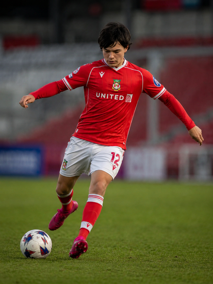
Academy
Fabricio Sandoval
CAMAge 18 · Left · 5'7" / 145 lbs · Also LW · Mar 2026 intake
PAC 79
SHO 46
PAS 61
DRI 69
DEF 35
PHY 54
Dev Plan Half-Winger
Next OVR 64 · ETA 2w
63
OVR
POT 74–80
FW · Forwards ▾
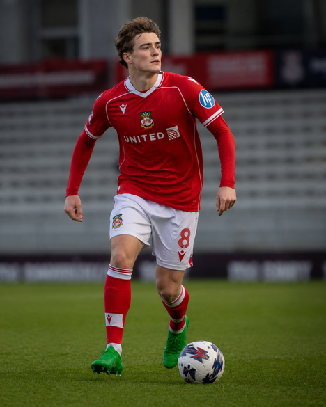
Academy
Nathaniel Matthews
RWAge 16 · Right · 5'9" / 145 lbs · Also LW · ST · Aug 2025 intake
PAC 71
SHO 53
PAS 61
DRI 62
DEF 32
PHY 49
Dev Plan Wide Playmaker
Next OVR 63 · ETA 7w
62
OVR
POT 75–81
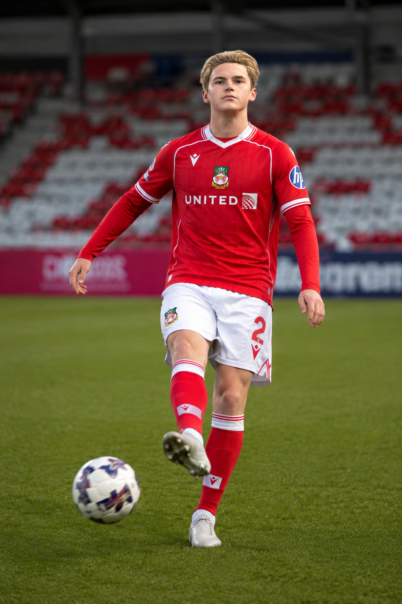
Academy
Mathieu Drouet
STAge 15 · Left · 5'6" / 141 lbs · France
PAC 63
SHO 48
PAS 42
DRI 52
DEF 27
PHY 51
Dev Plan Balanced
Next OVR 53 · ETA 37w
52
OVR
POT 84–90
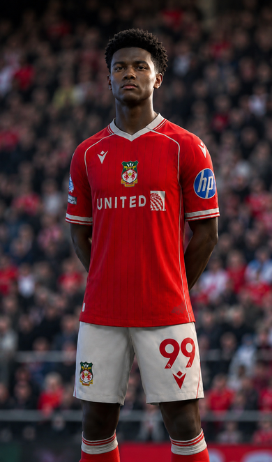
Academy
Jules Collin
RWAge 17 · Right · 5'8" / 143 lbs · France
PAC 81
SHO 49
PAS 52
DRI 67
DEF 33
PHY 53
Dev Plan Balanced
Next OVR 63 · ETA 31w
62
OVR
POT 81–87
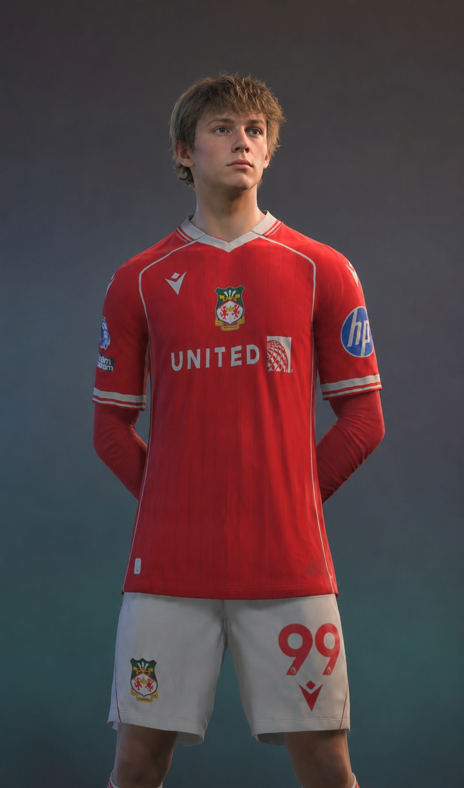
Academy
Stephane Bertrand
RWAge 16 · Right · 5'8" / 145 lbs · France
PAC 76
SHO 54
PAS 50
DRI 63
DEF 30
PHY 51
Dev Plan Balanced
Next OVR 61 · ETA 20w
60
OVR
POT 91–94
Academy
Thierry Besse
RWAge 16 · Right · 5'8" / 154 lbs · France
PAC 79
SHO 45
PAS 51
DRI 61
DEF 34
PHY 49
Dev Plan Winger
Next OVR 58 · ETA 3w
57
OVR
POT 86–92
Academy
Nathan Salaun
STAge 16 · Right · 5'11" / 160 lbs · France
PAC 64
SHO 53
PAS 45
DRI 51
DEF 26
PHY 55
Dev Plan Balanced
Next OVR 55 · ETA 30w
54
OVR
POT 81–87
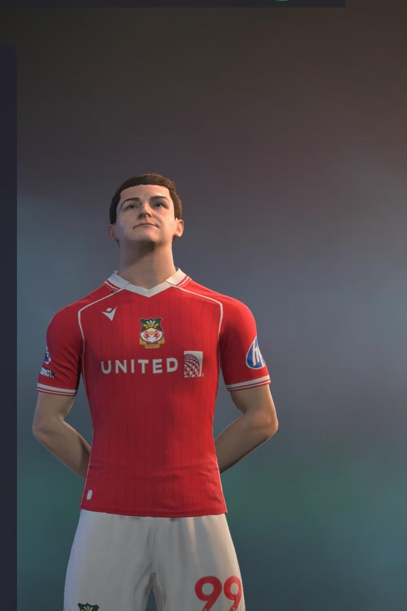
Academy
Lilian Faure
RMAge 17 · Right · 5'9" / 147 lbs · France
PAC 79
SHO 51
PAS 60
DRI 63
DEF 39
PHY 60
Dev Plan Dynamic
Next OVR 65 · ETA 27w
64
OVR
POT 76–84
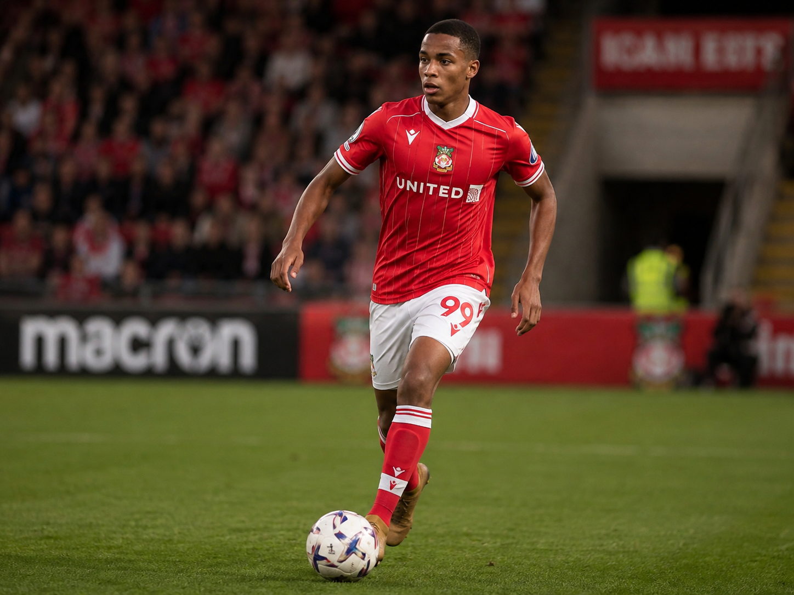
Academy
Matthieu Brunel
STAge 17 · Left · 6'1" / 176 lbs · France
PAC 69
SHO 63
PAS 52
DRI 61
DEF 32
PHY 62
Dev Plan Dynamic
Next OVR 65 · ETA 48w
64
OVR
POT 74–88
Reading This Page
Stats shown are Summary tab values from FC26. GK stats: SPD/KIC/POS/REF/HAN/DIV.
Border color = position group: ■ GK · ■ DEF · ■ MID · ■ ATK.
Faded cards = on loan or transfer-listed. Gold OVR = 72+. Tap section headers to collapse.